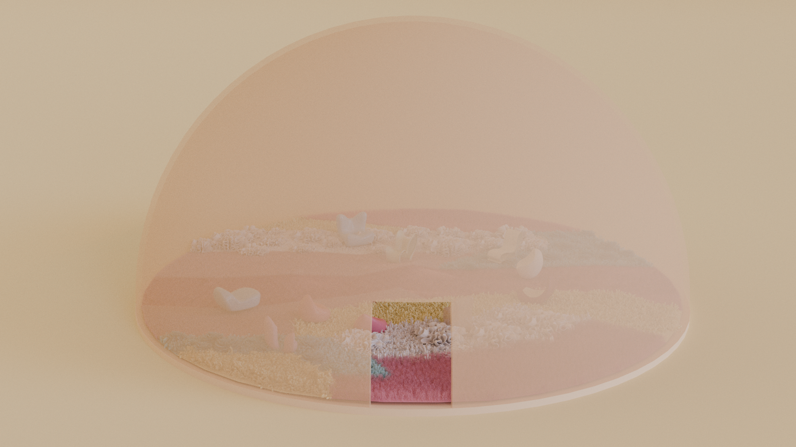
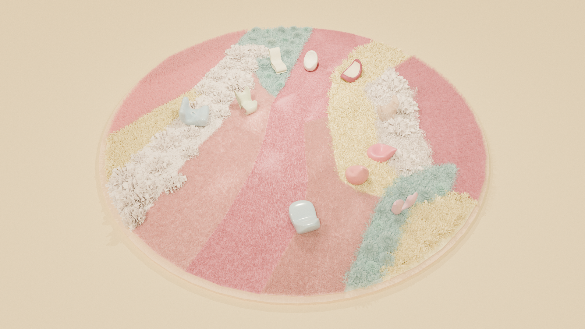
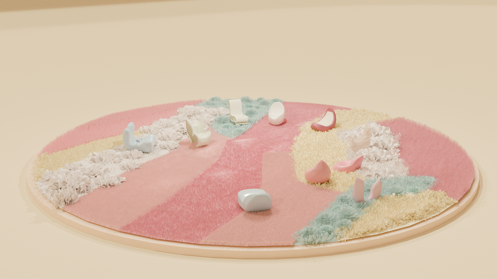
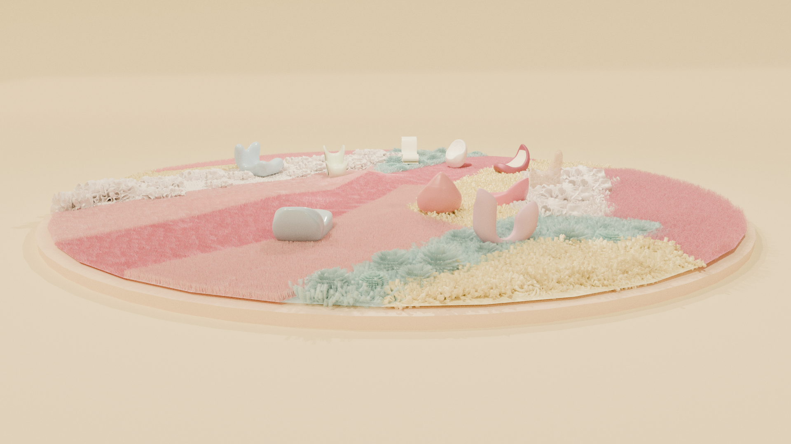
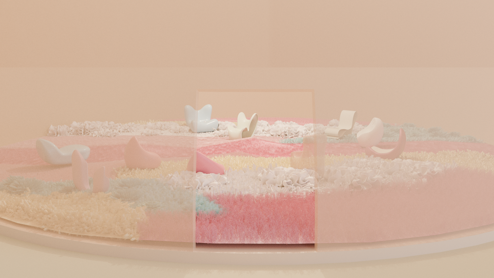

Touch
The bio-tactile carpet uses varied textures to simulate a gently enveloping bodily sensation.
Art direction / Furniture / Body / 2025
An experimental space that cares for the body through furniture, sound, touch and image. Beginning with the physical pressure of sedentary life, it organises yoga poses, multi-sensory materials and interactive seating into a field the body can understand.

The research question asks how multi-sensory interaction in furniture and spatial environments can help people affected by sedentary lifestyles, bodily discomfort and mental fatigue feel comfort and relaxation. The project translates bodily experience into Flex Seat, Sense Seat, a tactile carpet and audio visualisation.
The bio-tactile carpet uses varied textures to simulate a gently enveloping bodily sensation.
ASMR and sound visualisation create a slower, lower-stimulus immersive environment.
Flex Seat extracts forms from yoga poses, guiding the body toward stretching and pause.
Sense Seat imagines pressure sensors that gently respond to posture and muscular contact.
Filtered view




Research anchors
The project references Juhani Pallasmaa's writing on multi-sensory architecture, Merleau-Ponty's theory of embodied perception, and works by Ernesto Neto and Martino Gamper. Together, they point toward one idea: space is understood not only through the eyes, but also through skin, sound, posture, memory and action.
Her own yoga practice and spinal discomfort push comfort beyond "looking soft" toward a state where the body truly knows how to pause.
Behind the scene
This horizontal section gathers process fragments from modelling, materials, publication work and final renderings. Click any image to enlarge it.


